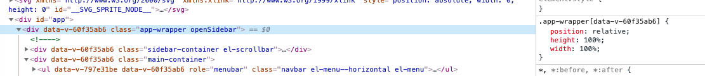

<!DOCTYPE html>


  


<html class="theme-next pisces use-motion" lang="zh-Hans">
<head><meta name="generator" content="Hexo 3.9.0">
  <meta charset="UTF-8">
<meta http-equiv="X-UA-Compatible" content="IE=edge">
<meta name="viewport" content="width=device-width, initial-scale=1, maximum-scale=1">
<meta name="theme-color" content="#222">


<meta http-equiv="Cache-Control" content="no-transform">
<meta http-equiv="Cache-Control" content="no-siteapp">


<link href="/lib/font-awesome/css/font-awesome.min.css?v=4.6.2" rel="stylesheet" type="text/css">

<link href="/css/main.css?v=6.0.0" rel="stylesheet" type="text/css">


  <link rel="apple-touch-icon" sizes="180x180" href="/images/apple-touch-icon-next.png?v=6.0.0">


  <link rel="icon" type="image/png" sizes="32x32" href="/images/favicon-32x32-next.png?v=6.0.0">


  <link rel="icon" type="image/png" sizes="16x16" href="/images/favicon-16x16-next.png?v=6.0.0">


  <link rel="mask-icon" href="/images/logo.svg?v=6.0.0" color="#222">


  <meta name="keywords" content="Hexo, NexT">


<meta name="description" content="使用CSS+XML完成任意文档的渲染css 并非只能作用于html元素，任意的tag都可以定义相应的css规则。 将css规则和xml文档喂给浏览器引擎，就可以渲染出合适的页面。 eg:">
<meta name="keywords" content="码农 蓝星">
<meta property="og:type" content="article">
<meta property="og:title" content="some_thoughts">
<meta property="og:url" content="https://dumbdonkey.github.io/2019/06/27/some-thoughts/index.html">
<meta property="og:site_name" content="蓝星码农生存手册">
<meta property="og:description" content="使用CSS+XML完成任意文档的渲染css 并非只能作用于html元素，任意的tag都可以定义相应的css规则。 将css规则和xml文档喂给浏览器引擎，就可以渲染出合适的页面。 eg:">
<meta property="og:locale" content="zh-Hans">
<meta property="og:image" content="https://dumbdonkey.github.io/2019/06/27/some-thoughts/resource/2019-06-27-16-13-47.png">
<meta property="og:image" content="https://dumbdonkey.github.io/2019/06/27/some-thoughts/resource/2019-06-27-16-14-04.png">
<meta property="og:updated_time" content="2019-09-07T14:58:45.462Z">
<meta name="twitter:card" content="summary">
<meta name="twitter:title" content="some_thoughts">
<meta name="twitter:description" content="使用CSS+XML完成任意文档的渲染css 并非只能作用于html元素，任意的tag都可以定义相应的css规则。 将css规则和xml文档喂给浏览器引擎，就可以渲染出合适的页面。 eg:">
<meta name="twitter:image" content="https://dumbdonkey.github.io/2019/06/27/some-thoughts/resource/2019-06-27-16-13-47.png">


<script type="text/javascript" id="hexo.configurations">
  var NexT = window.NexT || {};
  var CONFIG = {
    root: '/',
    scheme: 'Pisces',
    version: '6.0.0',
    sidebar: {"position":"left","display":"post","offset":12,"b2t":false,"scrollpercent":false,"onmobile":false},
    fancybox: false,
    fastclick: false,
    lazyload: false,
    tabs: true,
    motion: {"enable":true,"async":false,"transition":{"post_block":"fadeIn","post_header":"slideDownIn","post_body":"slideDownIn","coll_header":"slideLeftIn","sidebar":"slideUpIn"}},
    duoshuo: {
      userId: '0',
      author: '博主'
    },
    algolia: {
      applicationID: '',
      apiKey: '',
      indexName: '',
      hits: {"per_page":10},
      labels: {"input_placeholder":"Search for Posts","hits_empty":"We didn't find any results for the search: ${query}","hits_stats":"${hits} results found in ${time} ms"}
    }
  };
</script>


  <link rel="canonical" href="https://dumbdonkey.github.io/2019/06/27/some-thoughts/">


  <title>vue从入门到精通 | 蓝星码农生存手册</title>
  


</head>

<body itemscope itemtype="http://schema.org/WebPage" lang="zh-Hans">

  
  
    
  

  <div class="container sidebar-position-left page-post-detail">
    <div class="headband"></div>

    <header id="header" class="header" itemscope itemtype="http://schema.org/WPHeader">
      <div class="header-inner"> <div class="site-brand-wrapper">
  <div class="site-meta ">
    

    <div class="custom-logo-site-title">
      <a href="/" class="brand" rel="start">
        <span class="logo-line-before"><i></i></span>
        <span class="site-title">蓝星码农生存手册</span>
        <span class="logo-line-after"><i></i></span>
      </a>
    </div>
      
        <p class="site-subtitle"></p>
      
  </div>

  <div class="site-nav-toggle">
    <button>
      <span class="btn-bar"></span>
      <span class="btn-bar"></span>
      <span class="btn-bar"></span>
    </button>
  </div>
</div>

<nav class="site-nav">
  

  
    <ul id="menu" class="menu">
      
        
        <li class="menu-item menu-item-home">
          <a href="/" rel="section">
            
              <i class="menu-item-icon fa fa-fw fa-home"></i> <br>
            
            首页
          </a>
        </li>
      
        
        <li class="menu-item menu-item-archives">
          <a href="/archives/" rel="section">
            
              <i class="menu-item-icon fa fa-fw fa-archive"></i> <br>
            
            归档
          </a>
        </li>
      

      
    </ul>
  

  
</nav>


 </div>
    </header>

    <main id="main" class="main">
      <div class="main-inner">
        <div class="content-wrap">
          <div id="content" class="content">
            

  <div id="posts" class="posts-expand">
    

  

  
  
  

  <article class="post post-type-normal" itemscope itemtype="http://schema.org/Article">
  
  
  
  <div class="post-block">
    <link itemprop="mainEntityOfPage" href="https://dumbdonkey.github.io/2018/11/14/vue/">

    <span hidden itemprop="author" itemscope itemtype="http://schema.org/Person">
      <meta itemprop="name" content="dumbdonkey">
      <meta itemprop="description" content>
      <meta itemprop="image" content="/images/avatar.gif">
    </span>

    <span hidden itemprop="publisher" itemscope itemtype="http://schema.org/Organization">
      <meta itemprop="name" content="蓝星码农生存手册">
    </span>

    
      <header class="post-header">

        
        
          <h1 class="post-title" itemprop="name headline">vue从入门到精通</h1>
        

        <div class="post-meta">
          <span class="post-time">
            
              <span class="post-meta-item-icon">
                <i class="fa fa-calendar-o"></i>
              </span>
              
                <span class="post-meta-item-text">发表于</span>
              
              <time title="创建于" itemprop="dateCreated datePublished" datetime="2018-11-14T16:34:34+08:00">2018-11-14</time>
            

            

            
          </span>

          

          
            
          

          
          

          

          

          

        </div>
      </header>
    

    
    
    
    <div class="post-body" itemprop="articleBody">

      
      

      
        <p>[[toc]]</p>
<h1 id="Vue"><a href="#Vue" class="headerlink" title="Vue"></a>Vue</h1><h2 id="示例"><a href="#示例" class="headerlink" title="示例"></a>示例</h2><p><a href="http://jsrun.net/PKXKp/edit" target="_blank" rel="noopener">http://jsrun.net/PKXKp/edit</a></p>
<h3 id="坑"><a href="#坑" class="headerlink" title="坑"></a>坑</h3><ol>
<li><p>箭头函数中的this并不指向当前实例</p>
<p><a href="https://vuejs.org/v2/guide/instance.html" target="_blank" rel="noopener">https://vuejs.org/v2/guide/instance.html</a></p>
</li>
<li><p>Vue component 中没有template属性时，会将el绑定元素的html作为template</p>
</li>
<li><p>变量绑定的坑</p>
 <figure class="highlight plain"><table><tr><td class="gutter"><pre><span class="line">1</span><br><span class="line">2</span><br></pre></td><td class="code"><pre><span class="line"></span><br><span class="line">&lt;a :href=&quot;http://www.baidu.com&quot;/&gt;</span><br></pre></td></tr></table></figure>

<p> 这是一个错误的示例，只要使用了”:”,后面就是一个变量，vue会从data和properties中去寻找对应的属性进行绑定,如果要写常量，那么正常写就行，不要加什么”:”</p>
</li>
<li><p>注意prop名需要使用kebab-case的形式进行使用</p>
<p> <a href="https://vuejs.org/v2/guide/components-props.html" target="_blank" rel="noopener">https://vuejs.org/v2/guide/components-props.html</a></p>
 <figure class="highlight plain"><table><tr><td class="gutter"><pre><span class="line">1</span><br><span class="line">2</span><br><span class="line">3</span><br><span class="line">4</span><br><span class="line">5</span><br><span class="line">6</span><br><span class="line">7</span><br></pre></td><td class="code"><pre><span class="line">Vue.component(&apos;blog-post&apos;, &#123;</span><br><span class="line">// camelCase in JavaScript</span><br><span class="line">props: [&apos;postTitle&apos;],</span><br><span class="line">template: &apos;&lt;h3&gt;&#123;&#123; postTitle &#125;&#125;&lt;/h3&gt;&apos;</span><br><span class="line">&#125;)</span><br><span class="line">&lt;!-- kebab-case in HTML --&gt;</span><br><span class="line">&lt;blog-post post-title=&quot;hello!&quot;&gt;&lt;/blog-post&gt;</span><br></pre></td></tr></table></figure>
</li>
<li><p>Note that almost all built-in Vue directives are not supported when using JSX</p>
</li>
<li><p>beforeCreate hook中无法访问methods中定义的方法</p>
<p> 因为此时整个component还是初始化完成</p>
<p> 引申:</p>
<p> 做初始化的时候一定要注意选择合适的hook才可以</p>
</li>
</ol>
<h3 id="一些容易混淆的点"><a href="#一些容易混淆的点" class="headerlink" title="一些容易混淆的点"></a>一些容易混淆的点</h3><ol>
<li><p>箭头函数中的this并不指向当前实例</p>
<p> <a href="https://vuejs.org/v2/guide/instance.html" target="_blank" rel="noopener">https://vuejs.org/v2/guide/instance.html</a></p>
</li>
<li><p>Vue component和Vue Instance</p>
</li>
<li><p>赋值</p>
 <figure class="highlight plain"><table><tr><td class="gutter"><pre><span class="line">1</span><br><span class="line">2</span><br><span class="line">3</span><br><span class="line">4</span><br><span class="line">5</span><br><span class="line">6</span><br></pre></td><td class="code"><pre><span class="line">&lt;!--常量--&gt;</span><br><span class="line">&lt;container msg=&apos;abc&apos;&gt;</span><br><span class="line">&lt;/container&gt;</span><br><span class="line">&lt;!--绑定变量-shorthand--&gt;</span><br><span class="line">&lt;container :msg=&apos;content&apos;&gt;</span><br><span class="line">&lt;/container&gt;</span><br></pre></td></tr></table></figure>
</li>
<li><p>prop vs data</p>
<p> Properties are meant to be propagated and managed from parent components, while data is the component internal state (which the component is responsible for).</p>
<p> Data is the private memory of each component where you can store any variables you need. Props are how you pass this data from a parent component down to a child component.</p>
<p> <a href="http://michaelnthiessen.com/vue-props-vs-data/" target="_blank" rel="noopener">http://michaelnthiessen.com/vue-props-vs-data/</a></p>
<p> 如何避免data和prop的命名冲突</p>
<p> props 用来传递数据，data用来维护内部私有状态</p>
<p> props 和 data的变化都会触发组件的重绘</p>
<p> this.props.A 访问 A prop</p>
<p> this.data.A  访问 A data</p>
</li>
<li><p>组件中的data对象必须是一个function</p>
</li>
<li><p>数组的变动检测</p>
<p> 使用this.$set(datas,index,value)进行更新</p>
<p> <a href="https://vuejs.org/v2/guide/list.html#Array-Change-Detection" target="_blank" rel="noopener">https://vuejs.org/v2/guide/list.html#Array-Change-Detection</a></p>
</li>
<li><p>下划线开头的properties默认不可见</p>
<p> <a href="https://github.com/vuejs/vue/issues/2098" target="_blank" rel="noopener">https://github.com/vuejs/vue/issues/2098</a></p>
</li>
<li><p>哪些变量是reactive的 ？</p>
<p> data object中的所有属性会被加入reactivity system<br> props定义的属性</p>
</li>
<li><p>可以使用Object.freeze()冻结属性，确保其不会变化</p>
</li>
<li><p>vue的option属性和hook 方法不能使用arrow function</p>
<p><a href="https://vuejs.org/v2/guide/instance.html" target="_blank" rel="noopener">https://vuejs.org/v2/guide/instance.html</a></p>
</li>
<li><p>vue自己的方法和属性使用$开头</p>
</li>
<li><p>html元素属性的赋值需要使用v-bind 指令</p>
</li>
<li><p>为什么template无法直接访问Vue在原型上注册的常量?</p>
<p>Template expressions are sandboxed and only have access to a whitelist of globals such as Math and Date. You should not attempt to access user defined globals in template expressions.</p>
<p><a href="https://vuejs.org/v2/guide/syntax.html" target="_blank" rel="noopener">https://vuejs.org/v2/guide/syntax.html</a></p>
</li>
<li><p>2.6之后指令允许使用动态参数</p>
</li>
<li><p>事件处理函数添加参数</p>
<p>eg:</p>
<p>click(‘a’,$event) $event代表原始的事件参数</p>
</li>
<li><p>传递一个对象的所有属性到子组件</p>
</li>
<li><p>在css中能否使用vue组件的元素作为选择器 ？</p>
</li>
<li><p>如何覆盖vue组件的默认样式?</p>
</li>
<li><p>对v-model对应的变量直接赋值不会触发任何事件</p>
<p> <a href="https://jsfiddle.net/mingren/1jw3Lqfe/8/" target="_blank" rel="noopener">https://jsfiddle.net/mingren/1jw3Lqfe/8/</a></p>
</li>
</ol>
<h3 id="问题"><a href="#问题" class="headerlink" title="问题"></a>问题</h3><ol>
<li><p>能否像java一样不写this ？</p>
 <figure class="highlight plain"><table><tr><td class="gutter"><pre><span class="line">1</span><br><span class="line">2</span><br><span class="line">3</span><br><span class="line">4</span><br><span class="line">5</span><br></pre></td><td class="code"><pre><span class="line">methods: &#123;</span><br><span class="line">    timeRangeChange()&#123;</span><br><span class="line">      console.log(this.timeRange)</span><br><span class="line">    &#125;</span><br><span class="line">  &#125;,</span><br></pre></td></tr></table></figure>
</li>
<li><p>爷爷组件能直接监听孙子组件的事件吗?</p>
<p> 不能</p>
<p> <a href="https://stackoverflow.com/questions/42615445/vuejs-2-0-emit-event-from-grand-child-to-his-grand-parent-component" target="_blank" rel="noopener">https://stackoverflow.com/questions/42615445/vuejs-2-0-emit-event-from-grand-child-to-his-grand-parent-component</a></p>
</li>
</ol>
<ol start="3">
<li><p>timeUnit组件存在多个实例时，其他组件如何通过vuex识别正确的变化呢?</p>
</li>
<li><p>批量更新时如何避免大量重绘?</p>
<p> 先修改，然后只替换一次</p>
</li>
<li><p>vue-for 修改step</p>
<p> <a href="https://codesandbox.io/s/0omll4r1m0" target="_blank" rel="noopener">https://codesandbox.io/s/0omll4r1m0</a></p>
 <figure class="highlight plain"><table><tr><td class="gutter"><pre><span class="line">1</span><br><span class="line">2</span><br><span class="line">3</span><br><span class="line">4</span><br><span class="line">5</span><br><span class="line">6</span><br><span class="line">7</span><br><span class="line">8</span><br><span class="line">9</span><br><span class="line">10</span><br><span class="line">11</span><br><span class="line">12</span><br><span class="line">13</span><br><span class="line">14</span><br><span class="line">15</span><br><span class="line">16</span><br><span class="line">17</span><br><span class="line">18</span><br><span class="line">19</span><br></pre></td><td class="code"><pre><span class="line"></span><br><span class="line">&lt;template v-for=&quot;(metric,index) in metrics&quot;&gt;</span><br><span class="line">  &lt;el-row v-if=&quot;index%2==0&quot;&gt;</span><br><span class="line">    &lt;el-col :span=&quot;12&quot;&gt;</span><br><span class="line">      &lt;line-chart :data=&quot;metricDatas[metric.metric].data&quot; height=&quot;400px&quot;</span><br><span class="line">                  :titles=&quot;metricDatas[metric.metric].title&quot;</span><br><span class="line">                  :show-data-zoom=&quot;false&quot; :show-legend=&quot;false&quot;</span><br><span class="line">                  :show-tool-box=&quot;false&quot;&gt;&lt;/line-chart&gt;</span><br><span class="line">    &lt;/el-col&gt;</span><br><span class="line"></span><br><span class="line">    &lt;el-col :span=&quot;12&quot;&gt;</span><br><span class="line">      &lt;line-chart :data=&quot;metricDatas[metrics[index+1].metric].data&quot; height=&quot;400px&quot;</span><br><span class="line">                  :titles=&quot;metricDatas[metrics[index+1].metric].title&quot;</span><br><span class="line">                  :show-data-zoom=&quot;false&quot; :show-legend=&quot;false&quot;</span><br><span class="line">                  :show-tool-box=&quot;false&quot;&gt;&lt;/line-chart&gt;</span><br><span class="line">    &lt;/el-col&gt;</span><br><span class="line"></span><br><span class="line">  &lt;/el-row&gt;</span><br><span class="line">&lt;/template&gt;</span><br></pre></td></tr></table></figure>
</li>
<li><p>如何添加static property</p>
</li>
</ol>
<h2 id="Vue-实例-or-组件"><a href="#Vue-实例-or-组件" class="headerlink" title="Vue 实例 or 组件"></a>Vue 实例 or 组件</h2><ul>
<li><p>lifecycle</p>
<p>  </p>
</li>
<li><p>组件</p>
<p>Components are reusable Vue instances with a name</p>
<p>eg:</p>
  <figure class="highlight plain"><table><tr><td class="gutter"><pre><span class="line">1</span><br><span class="line">2</span><br><span class="line">3</span><br><span class="line">4</span><br><span class="line">5</span><br><span class="line">6</span><br><span class="line">7</span><br><span class="line">8</span><br><span class="line">9</span><br><span class="line">10</span><br><span class="line">11</span><br><span class="line">12</span><br><span class="line">13</span><br><span class="line">14</span><br></pre></td><td class="code"><pre><span class="line"></span><br><span class="line">//直接定义组件</span><br><span class="line">Vue.component(&apos;button-counter&apos;, &#123;</span><br><span class="line">  data: function () &#123;</span><br><span class="line">      return &#123;</span><br><span class="line">      count: 0</span><br><span class="line">      &#125;</span><br><span class="line">  &#125;,</span><br><span class="line">  components:&#123;</span><br><span class="line"></span><br><span class="line">  &#125;,</span><br><span class="line">  template: &apos;&lt;button v-on:click=&quot;count++&quot;&gt;You clicked me &#123;&#123; count &#125;&#125; times.&lt;/button&gt;&apos;</span><br><span class="line">  &#125; </span><br><span class="line">)</span><br></pre></td></tr></table></figure>
</li>
<li><p>差异性</p>
<p>  Since components are reusable Vue instances, they accept the same options as new Vue, such as data, computed, watch, methods, and lifecycle hooks. The only exceptions are a few root-specific options like el.</p>
</li>
</ul>
<ul>
<li>组件可以接收任意的prop(不受制与是否在组件内部进行过定义)</li>
</ul>
<h2 id="模板"><a href="#模板" class="headerlink" title="模板"></a>模板</h2><ol>
<li><p>mustache类似的变量替换</p>
<p>eg:</p>
 <figure class="highlight plain"><table><tr><td class="gutter"><pre><span class="line">1</span><br><span class="line">2</span><br></pre></td><td class="code"><pre><span class="line"></span><br><span class="line">&lt;span&gt;Message: &#123;&#123; msg &#125;&#125;&lt;/span&gt;</span><br></pre></td></tr></table></figure>


</li>
</ol>
<h2 id="指令"><a href="#指令" class="headerlink" title="指令"></a>指令</h2><p>Directives are special attributes with the v- prefix. Directive attribute values are expected to be a single JavaScript expression (with the exception of v-for, which will be discussed later). A directive’s job is to reactively apply side effects to the DOM when the value of its expression changes. </p>
<ul>
<li><p>v-bind</p>
<p>  绑定变量到dom元素属性上</p>
</li>
<li><p>v-if<br>  条件判断</p>
</li>
<li><p>v-on<br>  绑定事件方法</p>
</li>
<li><p>缩写形式<br>  v-bind:a –&gt; :a<br>  v-on:click –&gt; @click<br>  @[variable] –&gt; @variable</p>
</li>
<li><p>动态参数</p>
<p>  v-bind[variable]</p>
</li>
<li><p>v-model </p>
<p>双向绑定(js变动触发ui重绘，用户的输入触发js属性修改)<br>v-model同时还提供了很多边界的辅助功能，比如trim</p>
</li>
<li><p>可以自定义指令</p>
</li>
</ul>
<p>注意: Mustaches cannot be used inside HTML attributes. Instead, use a v-bind directive:</p>
<h2 id="修饰符"><a href="#修饰符" class="headerlink" title="修饰符"></a>修饰符</h2><pre><code>Modifiers are special postfixes denoted by a dot, which indicate that a directive should be bound in some special way. For example, the .prevent modifier tells the v-on directive to call event.preventDefault() on the triggered event:

<figure class="highlight plain"><table><tr><td class="gutter"><pre><span class="line">1</span><br></pre></td><td class="code"><pre><span class="line">&lt;form v-on:submit.prevent=&quot;onSubmit&quot;&gt; ... &lt;/form&gt;</span><br></pre></td></tr></table></figure></code></pre><h2 id="计算属性-computed-properties-amp-侦听属性-watched-properties"><a href="#计算属性-computed-properties-amp-侦听属性-watched-properties" class="headerlink" title="计算属性(computed properties) &amp; 侦听属性(watched properties)"></a>计算属性(computed properties) &amp; 侦听属性(watched properties)</h2><p>与普通方法的区别:<br>However, the difference is that computed properties are cached based on their dependencies.<br>计算属性会缓存，依赖不变，则无需重新计算</p>
<ul>
<li><p>computed</p>
<figure class="highlight plain"><table><tr><td class="gutter"><pre><span class="line">1</span><br><span class="line">2</span><br><span class="line">3</span><br><span class="line">4</span><br><span class="line">5</span><br><span class="line">6</span><br><span class="line">7</span><br><span class="line">8</span><br><span class="line">9</span><br><span class="line">10</span><br><span class="line">11</span><br><span class="line">12</span><br><span class="line">13</span><br></pre></td><td class="code"><pre><span class="line">var vm = new Vue(&#123;</span><br><span class="line">  el: &apos;#example&apos;,</span><br><span class="line">  data: &#123;</span><br><span class="line">    message: &apos;Hello&apos;</span><br><span class="line">  &#125;,</span><br><span class="line">  computed: &#123;</span><br><span class="line">    // a computed getter</span><br><span class="line">    reversedMessage: function () &#123;</span><br><span class="line">      // `this` points to the vm instance</span><br><span class="line">      return this.message.split(&apos;&apos;).reverse().join(&apos;&apos;)</span><br><span class="line">    &#125;</span><br><span class="line">  &#125;</span><br><span class="line">&#125;)</span><br></pre></td></tr></table></figure>

<p><strong>computed 属性还可以设置set方法的</strong></p>
</li>
<li><p>侦听属性(监听其他属性的变化)</p>
<figure class="highlight plain"><table><tr><td class="gutter"><pre><span class="line">1</span><br><span class="line">2</span><br><span class="line">3</span><br><span class="line">4</span><br><span class="line">5</span><br><span class="line">6</span><br><span class="line">7</span><br><span class="line">8</span><br><span class="line">9</span><br><span class="line">10</span><br><span class="line">11</span><br><span class="line">12</span><br><span class="line">13</span><br><span class="line">14</span><br><span class="line">15</span><br><span class="line">16</span><br><span class="line">17</span><br></pre></td><td class="code"><pre><span class="line">  </span><br><span class="line">var vm = new Vue(&#123;</span><br><span class="line">  el: &apos;#demo&apos;,</span><br><span class="line">  data: &#123;</span><br><span class="line">    firstName: &apos;Foo&apos;,</span><br><span class="line">    lastName: &apos;Bar&apos;,</span><br><span class="line">    fullName: &apos;Foo Bar&apos;</span><br><span class="line">  &#125;,</span><br><span class="line">  watch: &#123;</span><br><span class="line">    firstName: function (val) &#123;</span><br><span class="line">      this.fullName = val + &apos; &apos; + this.lastName</span><br><span class="line">    &#125;,</span><br><span class="line">    lastName: function (val) &#123;</span><br><span class="line">      this.fullName = this.firstName + &apos; &apos; + val</span><br><span class="line">    &#125;</span><br><span class="line">  &#125;</span><br><span class="line">&#125;)</span><br></pre></td></tr></table></figure>


</li>
</ul>
<p>实践上更推荐计算属性</p>
<h2 id="Class-and-Style-Bindings-（类与样式的绑定）"><a href="#Class-and-Style-Bindings-（类与样式的绑定）" class="headerlink" title="Class and Style Bindings （类与样式的绑定）"></a>Class and Style Bindings （类与样式的绑定）</h2><p>允许在binding时使用数组和对象简化绑定过程</p>
<p>eg:</p>
<figure class="highlight plain"><table><tr><td class="gutter"><pre><span class="line">1</span><br></pre></td><td class="code"><pre><span class="line">&lt;div v-bind:style=&quot;&#123; color: activeColor, fontSize: fontSize + &apos;px&apos; &#125;&quot;&gt;&lt;/div&gt;</span><br></pre></td></tr></table></figure>

<h2 id="自定义事件"><a href="#自定义事件" class="headerlink" title="自定义事件"></a>自定义事件</h2><p>通过$emit(‘eventName’,{params}) 抛出事件</p>
<p>父组件可以通过on-click捕捉处理</p>
<h2 id="slot"><a href="#slot" class="headerlink" title="slot"></a>slot</h2><p>eg:</p>
<figure class="highlight plain"><table><tr><td class="gutter"><pre><span class="line">1</span><br><span class="line">2</span><br><span class="line">3</span><br><span class="line">4</span><br><span class="line">5</span><br><span class="line">6</span><br><span class="line">7</span><br><span class="line">8</span><br><span class="line">9</span><br><span class="line">10</span><br><span class="line">11</span><br><span class="line">12</span><br><span class="line">13</span><br><span class="line">14</span><br><span class="line">15</span><br><span class="line">16</span><br><span class="line">17</span><br><span class="line">18</span><br><span class="line">19</span><br><span class="line">20</span><br><span class="line">21</span><br><span class="line">22</span><br><span class="line">23</span><br><span class="line">24</span><br><span class="line">25</span><br></pre></td><td class="code"><pre><span class="line"></span><br><span class="line">&lt;alert-box&gt;</span><br><span class="line">  Something bad happened.</span><br><span class="line">&lt;/alert-box&gt;</span><br><span class="line"></span><br><span class="line">Vue.component(&apos;alert-box&apos;, &#123;</span><br><span class="line">  template: `</span><br><span class="line">    &lt;div class=&quot;demo-alert-box&quot;&gt;</span><br><span class="line">      &lt;strong&gt;Error!&lt;/strong&gt;</span><br><span class="line">      &lt;slot&gt;&lt;/slot&gt;</span><br><span class="line">    &lt;/div&gt;</span><br><span class="line">  `</span><br><span class="line">&#125;)</span><br><span class="line"></span><br><span class="line"></span><br><span class="line">//替代方案（好像不可行）</span><br><span class="line">Vue.component(&apos;alert-box&apos;, &#123;</span><br><span class="line">  props:[contents]</span><br><span class="line">  template: `</span><br><span class="line">    &lt;div class=&quot;demo-alert-box&quot;&gt;</span><br><span class="line">      &lt;strong&gt;Error!&lt;/strong&gt;</span><br><span class="line">      &#123;&#123;contents&#125;&#125;</span><br><span class="line">    &lt;/div&gt;</span><br><span class="line">  `</span><br><span class="line">&#125;)</span><br></pre></td></tr></table></figure>

<p>当一个组件作为容器时，是无法提前预知自己内部会是什么元素的。 所以无法设置合适的prop进行内容传递(因为prop能传递的内容被锁死了，所以只能通过设计slot来做?)</p>
<ul>
<li>命名slot</li>
</ul>
<p>slot可以有默认值</p>
<h2 id="动态组件"><a href="#动态组件" class="headerlink" title="动态组件"></a>动态组件</h2><h2 id="edge-cases"><a href="#edge-cases" class="headerlink" title="edge-cases"></a>edge-cases</h2><ul>
<li><p>使用ref访问子组件</p>
</li>
<li><p>provide &amp; inject (注入父组件提供的方法,避免嵌套过深时,无法有效使用$parent的问题)</p>
</li>
</ul>
<h2 id="transitioning"><a href="#transitioning" class="headerlink" title="transitioning"></a>transitioning</h2><p>vue提供元素变化时的变化效果（渐变…）</p>
<h2 id="vuex"><a href="#vuex" class="headerlink" title="vuex"></a>vuex</h2><p>状态管理器</p>
<p>集中管理状态</p>
<p>- 为什么(问题)</p>
<pre><code>有些数据，并不需要在某次组件实例化时都进行获取,通过store可以确保只获取一次

However, the simplicity quickly breaks down when we have multiple components that share common state:

Multiple views may depend on the same piece of state. 多个视图依赖同一个状态

Actions from different views may need to mutate the same piece of state. 不同视图的行为需要改变同一个状态</code></pre><ul>
<li><p>简单store pattern</p>
<p>  <a href="https://vuejs.org/v2/guide/state-management.html#Simple-State-Management-from-Scratch" target="_blank" rel="noopener">https://vuejs.org/v2/guide/state-management.html#Simple-State-Management-from-Scratch</a></p>
</li>
</ul>
<p>eg:</p>
<p><a href="http://jsrun.net/HKXKp/edit" target="_blank" rel="noopener">http://jsrun.net/HKXKp/edit</a></p>
<p>Vuex<br>{<br>    state: //记录状态</p>
<pre><code>getters: 

//同步的状态变更方法。 通过store.commit(type,params) 触发
mutations: 

//允许包含异步逻辑的状态变更方法. 通过store.dispatch(type,params)触发
actions: </code></pre><p>}</p>
<h3 id="getters"><a href="#getters" class="headerlink" title="getters"></a>getters</h3><p>一些状态使用时需要经过一些transform,为了避免transform的代码各处拷贝，由getters统一维护</p>
<ul>
<li><p>以属性方式时访问getters时,getters将具有缓存特性，即依赖不变，不会重新计算<br>eg: store.getters.doneTodos</p>
</li>
<li><p>getter也支持也函数方式调用,这样就可以传递参数啦(注意:以函数形式访问时将不具有缓存特性)</p>
</li>
</ul>
<h3 id="Vue组件中使用state"><a href="#Vue组件中使用state" class="headerlink" title="Vue组件中使用state"></a>Vue组件中使用state</h3><p>Vue可以在全局注入一个store实例,然后每个组件就都可以通过<br>this.$store进行访问。</p>
<p>state</p>
<ol>
<li><p>为什么需要通过mutation即commit的方式提交变更</p>
<p>因为这个可以方便vuex内部进行跟踪，比如提供时光隧道的功能。这并不是必须的，我们是可以直接修改stated的。</p>
</li>
</ol>
<h3 id="store的模块化"><a href="#store的模块化" class="headerlink" title="store的模块化"></a>store的模块化</h3><figure class="highlight plain"><table><tr><td class="gutter"><pre><span class="line">1</span><br><span class="line">2</span><br><span class="line">3</span><br><span class="line">4</span><br><span class="line">5</span><br><span class="line">6</span><br><span class="line">7</span><br><span class="line">8</span><br><span class="line">9</span><br><span class="line">10</span><br><span class="line">11</span><br><span class="line">12</span><br><span class="line">13</span><br><span class="line">14</span><br><span class="line">15</span><br><span class="line">16</span><br><span class="line">17</span><br><span class="line">18</span><br><span class="line">19</span><br><span class="line">20</span><br><span class="line">21</span><br><span class="line">22</span><br></pre></td><td class="code"><pre><span class="line">const moduleA = &#123;</span><br><span class="line">  state: &#123; ... &#125;,</span><br><span class="line">  mutations: &#123; ... &#125;,</span><br><span class="line">  actions: &#123; ... &#125;,</span><br><span class="line">  getters: &#123; ... &#125;</span><br><span class="line">&#125;</span><br><span class="line"></span><br><span class="line">const moduleB = &#123;</span><br><span class="line">  state: &#123; ... &#125;,</span><br><span class="line">  mutations: &#123; ... &#125;,</span><br><span class="line">  actions: &#123; ... &#125;</span><br><span class="line">&#125;</span><br><span class="line"></span><br><span class="line">const store = new Vuex.Store(&#123;</span><br><span class="line">  modules: &#123;</span><br><span class="line">    a: moduleA,</span><br><span class="line">    b: moduleB</span><br><span class="line">  &#125;</span><br><span class="line">&#125;)</span><br><span class="line"></span><br><span class="line">store.state.a // -&gt; `moduleA`&apos;s state</span><br><span class="line">store.state.b // -&gt; `moduleB`&apos;s state</span><br></pre></td></tr></table></figure>

<h2 id="总结"><a href="#总结" class="headerlink" title="总结"></a>总结</h2><p>看起来是在吸收react经验的基础上改进了很多react的缺陷。</p>
<p>比如</p>
<ol>
<li><p>组件间的通讯问题:</p>
<p> react需要自行引入第三方组件。</p>
<p> vue自带事件机制</p>
</li>
<li><p>状态更新问题，state,prop傻傻分不清楚。</p>
<p> vue使用object.defineProperty黑魔法自动为所有的prop添加getter,setter,进而追踪每一个prop的变化，一旦检测大变化就可以触发render了。</p>
</li>
<li><p>内容分发机制</p>
<p> 在react中好像并没有这个机制。</p>
</li>
<li><p>通过可扩展的指令和组件机制方便coding</p>
</li>
</ol>
<h3 id="style-scoped"><a href="#style-scoped" class="headerlink" title="style scoped"></a>style scoped</h3><p>Scoped CSS. When a &lt;style&gt; tag has the scoped attribute, its CSS will apply to elements of the current component only. This is similar to the style encapsulation …</p>
<p>eg:</p>
<figure class="highlight plain"><table><tr><td class="gutter"><pre><span class="line">1</span><br><span class="line">2</span><br><span class="line">3</span><br><span class="line">4</span><br><span class="line">5</span><br><span class="line">6</span><br></pre></td><td class="code"><pre><span class="line"></span><br><span class="line">&lt;style scoped&gt;</span><br><span class="line">  .tab-container &#123;</span><br><span class="line">    margin: 30px;</span><br><span class="line">  &#125;</span><br><span class="line">&lt;/style&gt;</span><br></pre></td></tr></table></figure>

<p></p>
<p>scope style通过在post css阶段加入特定属性限制了style的作用域</p>

      
    </div>
    
    
    

    

    

    

    <footer class="post-footer">
      
        <div class="post-tags">
          
            <a href="/tags/javascript/" rel="tag"># javascript</a>
          
            <a href="/tags/前端/" rel="tag"># 前端</a>
          
        </div>
      

      
      
      

      
        <div class="post-nav">
          <div class="post-nav-next post-nav-item">
            
              <a href="/2018/11/14/应用迁移k8s后文件句柄暴增定位/" rel="next" title="应用迁移至k8s后文件句柄暴增定位">
                <i class="fa fa-chevron-left"></i> 应用迁移至k8s后文件句柄暴增定位
              </a>
            
          </div>

          <span class="post-nav-divider"></span>

          <div class="post-nav-prev post-nav-item">
            
              <a href="/2018/11/22/方法or事件/" rel="prev" title="方法or事件">
                方法or事件 <i class="fa fa-chevron-right"></i>
              </a>
            
          </div>
        </div>
      

      
      
    </footer>
  </div>
  
  
  
  </article>


    <div class="post-spread">
      
    </div>
  </div>


          </div>
          


          

  


        </div>
        
          
  
  <div class="sidebar-toggle">
    <div class="sidebar-toggle-line-wrap">
      <span class="sidebar-toggle-line sidebar-toggle-line-first"></span>
      <span class="sidebar-toggle-line sidebar-toggle-line-middle"></span>
      <span class="sidebar-toggle-line sidebar-toggle-line-last"></span>
    </div>
  </div>

  <aside id="sidebar" class="sidebar">
    
    <div class="sidebar-inner">

      

      
        <ul class="sidebar-nav motion-element">
          <li class="sidebar-nav-toc sidebar-nav-active" data-target="post-toc-wrap">
            文章目录
          </li>
          <li class="sidebar-nav-overview" data-target="site-overview-wrap">
            站点概览
          </li>
        </ul>
      

      <section class="site-overview-wrap sidebar-panel">
        <div class="site-overview">
          <div class="site-author motion-element" itemprop="author" itemscope itemtype="http://schema.org/Person">
            
              <p class="site-author-name" itemprop="name">dumbdonkey</p>
              <p class="site-description motion-element" itemprop="description">站在宇宙的尽头,穿越浩渺时空,俯视人生、对待生命!</p>
          </div>

          <nav class="site-state motion-element">

            
              <div class="site-state-item site-state-posts">
              
                <a href="/archives/">
              
                  <span class="site-state-item-count">10</span>
                  <span class="site-state-item-name">日志</span>
                </a>
              </div>
            

            
              
              
              <div class="site-state-item site-state-categories">
                
                  <span class="site-state-item-count">1</span>
                  <span class="site-state-item-name">分类</span>
                
              </div>
            

            
              
              
              <div class="site-state-item site-state-tags">
                
                  <span class="site-state-item-count">5</span>
                  <span class="site-state-item-name">标签</span>
                
              </div>
            

          </nav>

          

          

          
          

          
          

          

        </div>
      </section>

      
      <!--noindex-->
        <section class="post-toc-wrap motion-element sidebar-panel sidebar-panel-active">
          <div class="post-toc">

            
              
            

            
              <div class="post-toc-content"><ol class="nav"><li class="nav-item nav-level-1"><a class="nav-link" href="#Vue"><span class="nav-number">1.</span> <span class="nav-text">Vue</span></a><ol class="nav-child"><li class="nav-item nav-level-2"><a class="nav-link" href="#示例"><span class="nav-number">1.1.</span> <span class="nav-text">示例</span></a><ol class="nav-child"><li class="nav-item nav-level-3"><a class="nav-link" href="#坑"><span class="nav-number">1.1.1.</span> <span class="nav-text">坑</span></a></li><li class="nav-item nav-level-3"><a class="nav-link" href="#一些容易混淆的点"><span class="nav-number">1.1.2.</span> <span class="nav-text">一些容易混淆的点</span></a></li><li class="nav-item nav-level-3"><a class="nav-link" href="#问题"><span class="nav-number">1.1.3.</span> <span class="nav-text">问题</span></a></li></ol></li><li class="nav-item nav-level-2"><a class="nav-link" href="#Vue-实例-or-组件"><span class="nav-number">1.2.</span> <span class="nav-text">Vue 实例 or 组件</span></a></li><li class="nav-item nav-level-2"><a class="nav-link" href="#模板"><span class="nav-number">1.3.</span> <span class="nav-text">模板</span></a></li><li class="nav-item nav-level-2"><a class="nav-link" href="#指令"><span class="nav-number">1.4.</span> <span class="nav-text">指令</span></a></li><li class="nav-item nav-level-2"><a class="nav-link" href="#修饰符"><span class="nav-number">1.5.</span> <span class="nav-text">修饰符</span></a></li><li class="nav-item nav-level-2"><a class="nav-link" href="#计算属性-computed-properties-amp-侦听属性-watched-properties"><span class="nav-number">1.6.</span> <span class="nav-text">计算属性(computed properties) &amp; 侦听属性(watched properties)</span></a></li><li class="nav-item nav-level-2"><a class="nav-link" href="#Class-and-Style-Bindings-（类与样式的绑定）"><span class="nav-number">1.7.</span> <span class="nav-text">Class and Style Bindings （类与样式的绑定）</span></a></li><li class="nav-item nav-level-2"><a class="nav-link" href="#自定义事件"><span class="nav-number">1.8.</span> <span class="nav-text">自定义事件</span></a></li><li class="nav-item nav-level-2"><a class="nav-link" href="#slot"><span class="nav-number">1.9.</span> <span class="nav-text">slot</span></a></li><li class="nav-item nav-level-2"><a class="nav-link" href="#动态组件"><span class="nav-number">1.10.</span> <span class="nav-text">动态组件</span></a></li><li class="nav-item nav-level-2"><a class="nav-link" href="#edge-cases"><span class="nav-number">1.11.</span> <span class="nav-text">edge-cases</span></a></li><li class="nav-item nav-level-2"><a class="nav-link" href="#transitioning"><span class="nav-number">1.12.</span> <span class="nav-text">transitioning</span></a></li><li class="nav-item nav-level-2"><a class="nav-link" href="#vuex"><span class="nav-number">1.13.</span> <span class="nav-text">vuex</span></a><ol class="nav-child"><li class="nav-item nav-level-3"><a class="nav-link" href="#getters"><span class="nav-number">1.13.1.</span> <span class="nav-text">getters</span></a></li><li class="nav-item nav-level-3"><a class="nav-link" href="#Vue组件中使用state"><span class="nav-number">1.13.2.</span> <span class="nav-text">Vue组件中使用state</span></a></li><li class="nav-item nav-level-3"><a class="nav-link" href="#store的模块化"><span class="nav-number">1.13.3.</span> <span class="nav-text">store的模块化</span></a></li></ol></li><li class="nav-item nav-level-2"><a class="nav-link" href="#总结"><span class="nav-number">1.14.</span> <span class="nav-text">总结</span></a><ol class="nav-child"><li class="nav-item nav-level-3"><a class="nav-link" href="#style-scoped"><span class="nav-number">1.14.1.</span> <span class="nav-text">style scoped</span></a></li></ol></li></ol></li></ol></div>
            

          </div>
        </section>
      <!--/noindex-->
      

      

    </div>
  </aside>


        
      </div>
    </main>

    <footer id="footer" class="footer">
      <div class="footer-inner">
        <div class="copyright">&copy; <span itemprop="copyrightYear">2019</span>
  <span class="with-love">
    <i class="fa fa-user"></i>
  </span>
  <span class="author" itemprop="copyrightHolder">dumbdonkey</span>

  

  
</div>


  <div class="powered-by">由 <a class="theme-link" target="_blank" href="https://hexo.io">Hexo</a> 强力驱动</div>


  <span class="post-meta-divider">|</span>


  <div class="theme-info">主题 &mdash; <a class="theme-link" target="_blank" href="https://github.com/theme-next/hexo-theme-next">NexT.Pisces</a> v6.0.0</div>


        


        
      </div>
    </footer>

    
      <div class="back-to-top">
        <i class="fa fa-arrow-up"></i>
        
      </div>
    

    

  </div>

  

<script type="text/javascript">
  if (Object.prototype.toString.call(window.Promise) !== '[object Function]') {
    window.Promise = null;
  }
</script>


  
  
    <script type="text/javascript" src="/lib/jquery/index.js?v=2.1.3"></script>
  

  
  
    <script type="text/javascript" src="/lib/velocity/velocity.min.js?v=1.2.1"></script>
  

  
  
    <script type="text/javascript" src="/lib/velocity/velocity.ui.min.js?v=1.2.1"></script>
  


  


  <script type="text/javascript" src="/js/src/utils.js?v=6.0.0"></script>

  <script type="text/javascript" src="/js/src/motion.js?v=6.0.0"></script>


  
  


  <script type="text/javascript" src="/js/src/affix.js?v=6.0.0"></script>

  <script type="text/javascript" src="/js/src/schemes/pisces.js?v=6.0.0"></script>


  
  <script type="text/javascript" src="/js/src/scrollspy.js?v=6.0.0"></script>
<script type="text/javascript" src="/js/src/post-details.js?v=6.0.0"></script>


  


  <script type="text/javascript" src="/js/src/bootstrap.js?v=6.0.0"></script>


  


  


	


  


  


  


  

  

  

  
  

  

  

  

</body>
</html>
